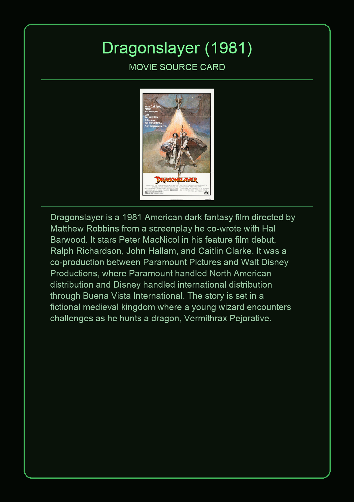
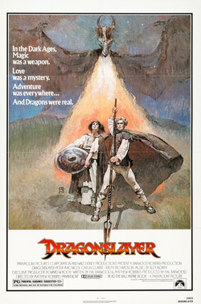

Dragonslayer is a 1981 American dark fantasy film directed by Matthew Robbins from a screenplay he co-wrote with Hal Barwood. It stars Peter MacNicol in his feature film debut, Ralph Richardson, John Hallam, and Caitlin Clarke. It was a co-production between Paramount Pictures and Walt Disney Productions, where Paramount handled North American distribution and Disney handled international distribution through Buena Vista International. The story is set in a fictional medieval kingdom where a young wizard encounters challenges as he hunts a dragon, Vermithrax Pejorative.
This page aggregates references to the source material behind Name Lore entries.